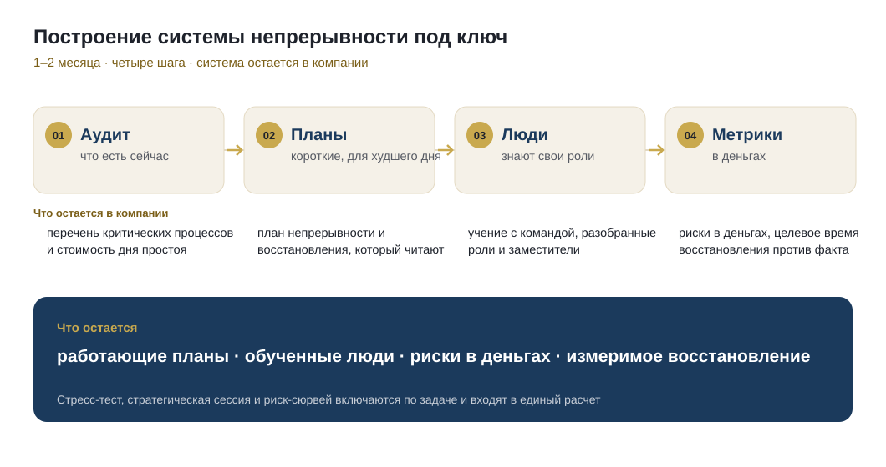

ERGP для руководителей непрерывности, SAFE для персонала. Для компаний дашборд непрерывности и рисков и система под ключ. За всем этим практика в промышленности и банках.
Программа для тех, кто строит систему непрерывности, программа по безопасности для всего персонала и очный тренинг для управленческой команды.
Как поставить в компании работающую систему непрерывности: от аппетита к риску, который утверждает совет директоров, до планов восстановления, отчета аудитору и метрик, которые можно предъявить.
То, что мы приносим компании: живая картина устойчивости для руководства и построение системы непрерывности под ключ. Цена по объему работ, расчет за два рабочих дня.

Одна живая картина устойчивости для руководства: индекс, стоимость дня простоя, целевые показатели восстановления против факта. Обновляется по вашим данным.
Подробнее о дашборде →
Начинаем с честного аудита того, что есть, и за один-два месяца доводим до работающей системы: короткие планы для худшего дня, люди, которые знают свои роли, риски в деньгах и измеримое восстановление. Стресс-тест, стратегическая сессия и риск-сюрвей площадок включаются по задаче и входят в единый расчет.
Подробнее и запросить расчет →рублей — ущерб от кибератак российскому бизнесу за 8 месяцев 2025 года
Источник: Solar 4RAYS, BI.ZONE — 2025всех кибератак на российские компании привели к остановке деятельности в 2025 году
Источник: Solar 4RAYS / Ведомости— минимальный совокупный ущерб от одной успешной атаки для среднего бизнеса
Источник: BI.ZONE, апрель 2026число атак выросло за год. И будет расти дальше — это не прогноз, это тренд
Источник: Positive Technologies, 2025Диагностика показывает, где компания уязвима сегодня. Книга дает карту действий на день сбоя.
Тринадцать вопросов, мгновенный результат: уровень готовности и три главные зоны риска.
Практическая карта непрерывности: от оценки уязвимостей до работы в день сбоя.
Все, чему мы учим и что внедряем у клиентов, опубликовано здесь. Методики, готовые структуры документов, требования регуляторов и разборы реальных сценариев — без регистрации и без оплаты.
Два основателя с двадцатью годами в риск-функциях крупных организаций, промышленность и банк. Программы написаны по тому, что выдержало и что сломалось в реальных инцидентах.


Сертификат ERGP это вход в закрытое сообщество сертифицированных практиков: ежеквартальные сессии, каталог членов, назначение на реальные проекты компаний. Сообщество одно на русскую, английскую и арабскую редакции программы.
У каждого сертификата номер, работодатель проверяет его по открытому реестру за десять секунд.
Проверить сертификат →Выберите, что вас интересует, — ответим в течение рабочего дня и предложим следующий шаг.